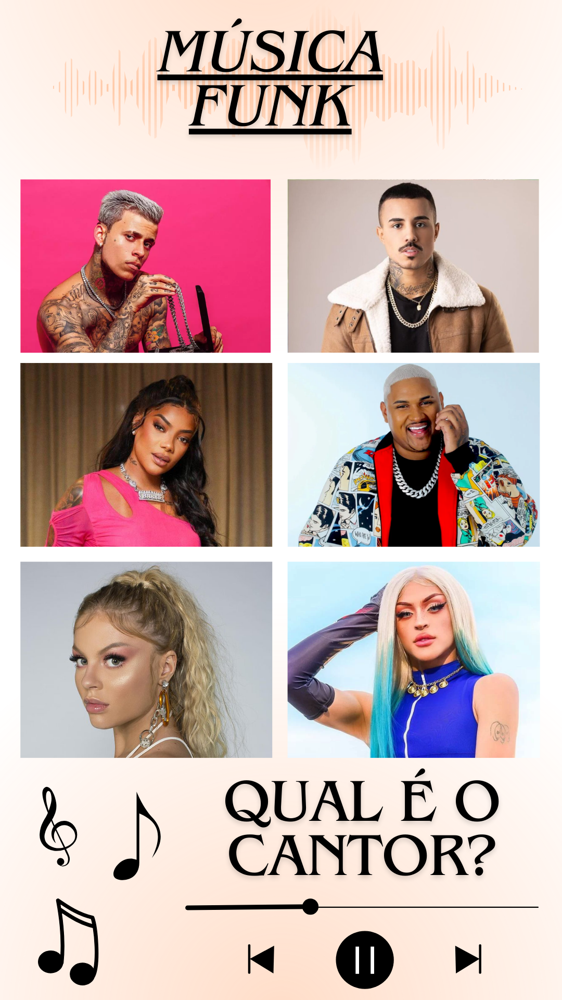
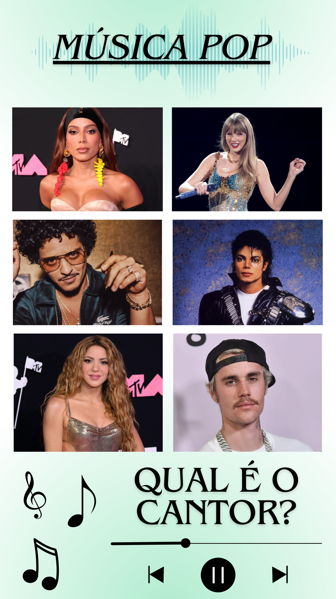

Codificação de Sinais Multimídia - 3º Quadrimestre de 2023
Objetivos:
Nosso grupo teve com objetivo unir a didática STEAM, em especial, a ARTE com os conceitos de multimídia da disciplina. Para isso o meio principal foi o trazer os conceitos de tons de voz e suas peculiaridades unido com a música, uma manifestação artística, mostrando que podemos realizar trabalhos interessantes com música e áudio e que há uma enorme gama de possibilidades para isso.
O grupo então criou uma apresentação para contextualizar e explicar sobre como é formada e voz e as diferenças entre os tons de voz. Utilizou-se um vídeo para monstrar o mecanismo das cordas vocais e por fim trouxe uma interação para os ouvintes tentarem identificar os cantores de algumas músicas que tiveram seus tons e velocidade modificadas. Os ouvintes que acertavam, eram então, premiados com balas!


Áudios Utilizados:
Respectivamente: Taylo Swift agudo e grave, Bruno Mars agudo e grave: